Explora seis valles vitivinícolas de las regiones 4.ª, 5.ª y 6.ª con transporte privado, bodegas boutique y una ruta adaptada a tus gustos.
El servicio
Chile produce algunos de los mejores vinos del mundo. Con Deckel llegas a las bodegas en transporte privado, sin preocuparte por el camino de regreso. Tú disfruta las degustaciones.
Acceso a viñas de renombre como Concha y Toro, Santa Rita, Montes, Casa Lapostolle y más.
Conocemos las rutas y los mejores momentos para visitar cada viña. Te contamos la historia del vino chileno.
Nuestro conductor es quien maneja. Tú puedes disfrutar cada copa con total tranquilidad.
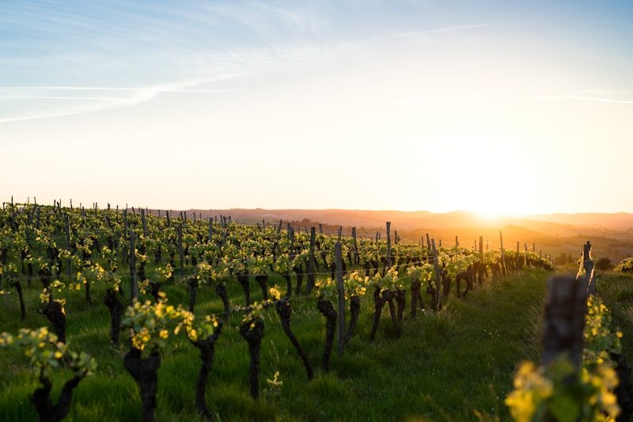
Valles vitivinícolas
Seleccionamos seis destinos enoturísticos para crear rutas únicas, desde paisajes de montaña hasta viñedos de altura y bodegas emblemáticas.
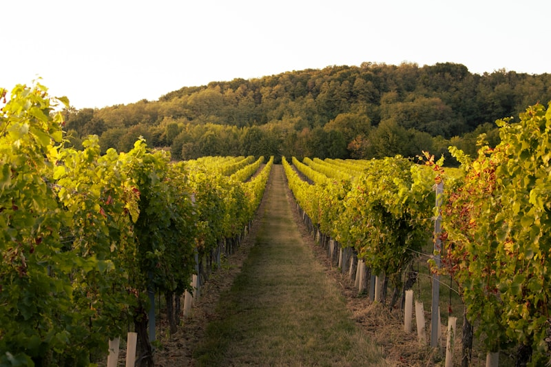
Ideal para vinos blancos de gran frescura y una experiencia de viñas modernas en un paisaje seco y luminoso.
Un destino más íntimo y auténtico, perfecto para descubrir bodegas pequeñas y paisajes de montaña.
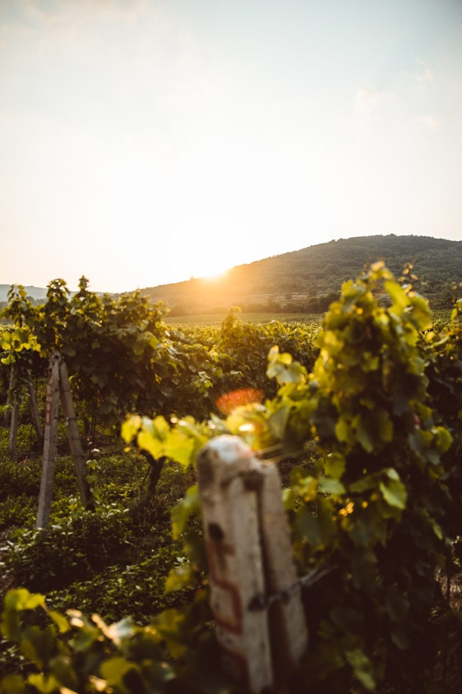
Famoso por sus Sauvignon Blanc y Pinot Noir, con una ruta cercana a la costa y a Viña del Mar.
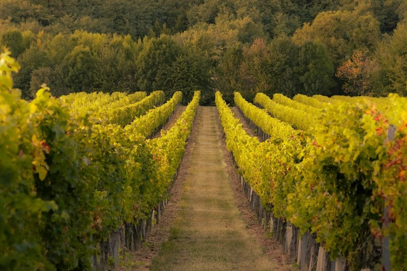
Una opción relajada para disfrutar de vinos frescos, bodegas cercanas al mar y un ambiente más tranquilo.
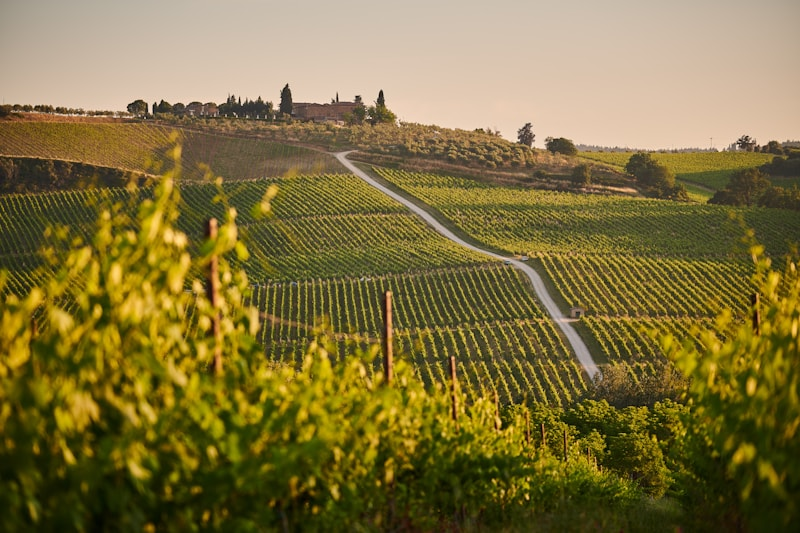
El referente del vino rojo chileno, con grandes tintos, bodegas de lujo y paisajes de viñedos amplios.
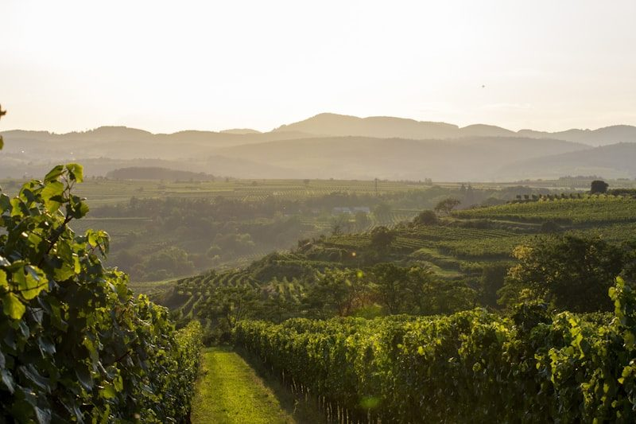
Perfecto para combinar viñas históricas, degustaciones y una experiencia más cercana a la tradición.
Sin costos ocultos
Conocedor de rutas y bodegas
Adaptado a tus intereses
Conexión durante el trayecto
Aire acondicionado y confort
Todos los viajes cubiertos
En los mejores viñedos
Te ayudamos a coordinarlo
Un valle o varios en el día
La experiencia
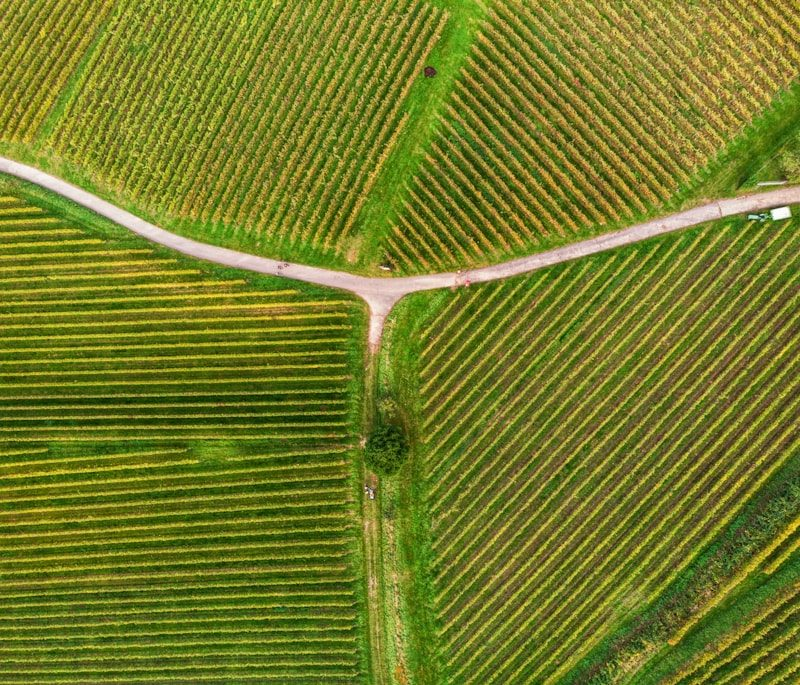
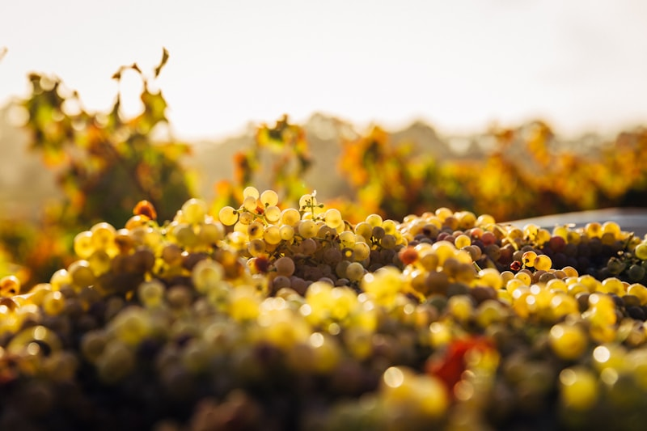
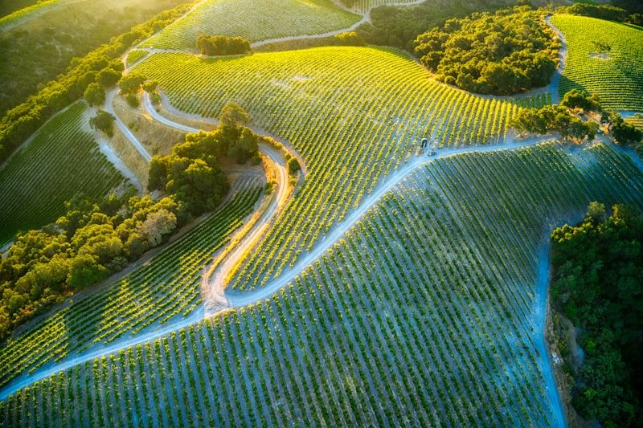
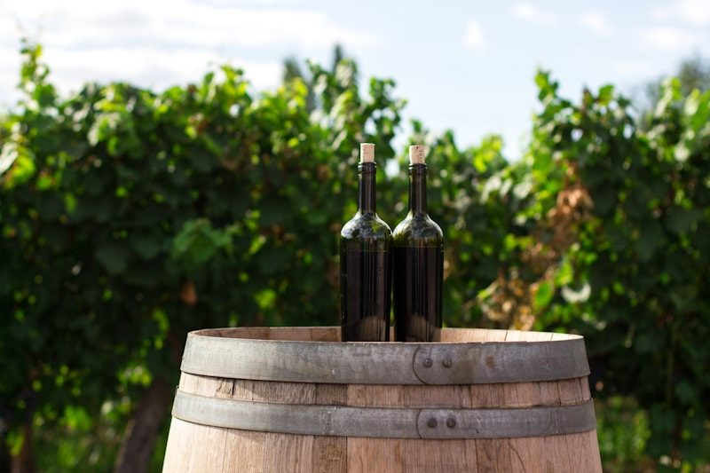
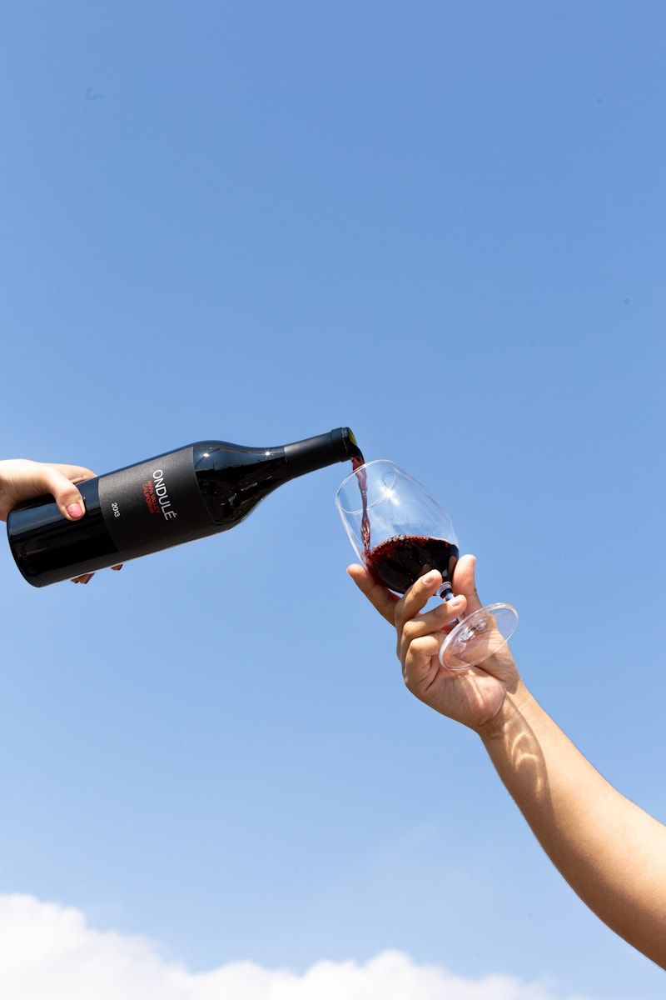
Simple y rápido
Cuéntanos qué valley te interesa y si tienes bodegas específicas en mente. Te asesoramos en la selección.
Diseñamos el itinerario con horarios, reservas en bodegas y paradas fotográficas en los mejores puntos.
Te buscamos en Santiago. Tú disfruta cada copa — nuestro conductor te lleva de vuelta con seguridad.
Dudas frecuentes
Escríbenos con la fecha y el valle que te interesa. Armamos tu ruta del vino en minutos.